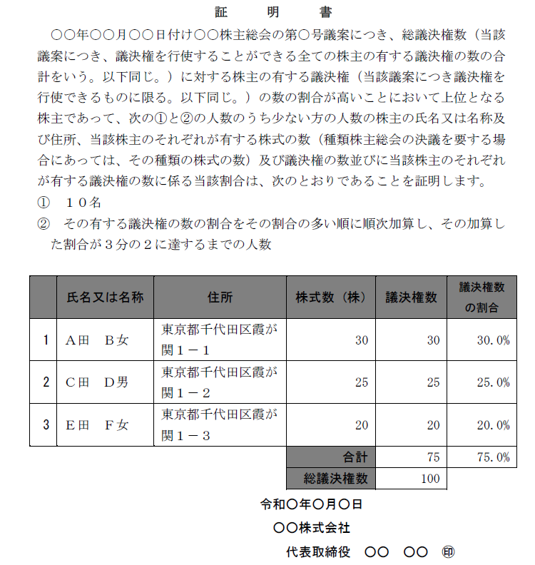
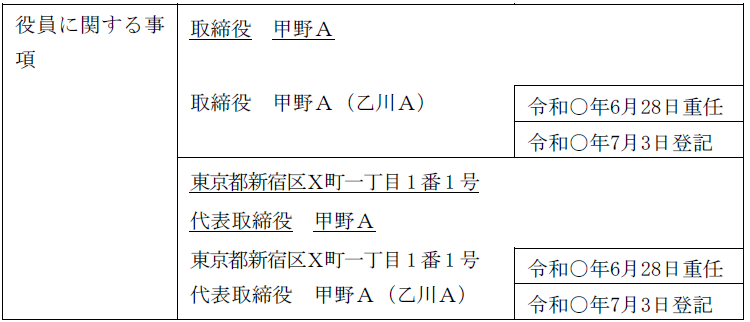
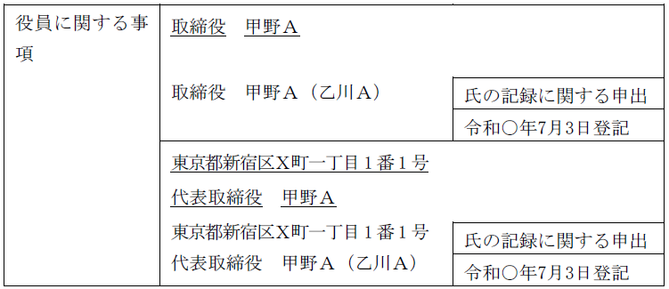
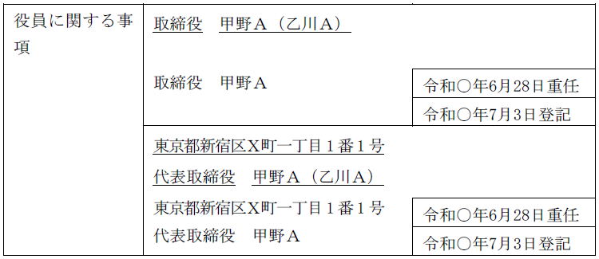
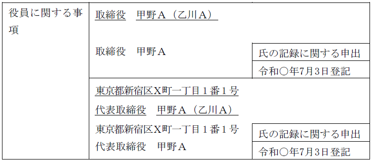

第２編 株式会社
第２章 機関
第７節 機関に関する登記
Ⅰ 役員等の就任登記
役員等が就任した場合には、役員変更登記をしなければならない。
1. 就任登記の登記事項
| 役員等 | 登記事項 | |
| 取締役、監査役、執行役 | 氏名及び就任年月日 | ・（監査役のみ）会計限定監査役である場合は、その旨（会911Ⅲ17号イ） |
| 代表取締役 代表執行役 |
・住所 | |
| 会計参与 | 氏名又は名称及び就任年月日 | ・書類等備置場所（会911Ⅲ16号） |
| 会計監査人 | － | |
2. 就任登記の添付書面
| 役員等 | 添付書面 | 添付する可能性がある書面 | |
| 取締役、監査役、執行役 | 選任・選定されたことがわかる議事録、株主リスト（株主総会議事録添付の場合）、就任承諾書（議事録の記載の援用あり）、委任状 | 印鑑証明書（商登規61） | 本人確認証明書 |
| 代表取締役 代表執行役 |
－ | ||
| 会計参与 | 資格を証する書面 | ||
| 会計監査人 | |||
1. 意義
株主リストとは、以下の場合に添付を要求される添付書面である。株主総会議事録等を偽造して虚偽の登記を行うなど、違法行為を防止する趣旨である。
株主リストと株主名簿（会社法121条）とでは、後者につき議決権数の記載を要しないことなど、記載内容が異なるものであるから、株主名簿の添付により、株主リストの添付を不要とすることはできない（法務省ＨＰの株主リストに関するよくあるご質問Ｑ4）。
(1) 株主リストが要求される登記・株主リストの内容
(a) 登記すべき事項につき株主全員又は種類株主全員の同意を要する場合（商登規61条2項）
株主全員又は種類株主全員について以下の事項を記載した株主リストを添付する。
| ①株主の氏名又は名称 |
| ②住所 |
| ③株式の数（種類株式発行会社は、種類株式の種類及び数） |
| ④議決権の数 |
ⅰ 商登規61条3項の株主リスト（下記(b)）との違い
下記(b)と異なり、議決権の数の割合の記載は不要である。株主（又は種類株主）全員を記載するため、議決権の数は関係ないからである。
ⅱ 記載の対象となる株主
当該株主リスト（商登規61条2項）には、株主「全員」の氏名等の記載を要するため（登研823P.52）、議決権を行使することができない株式（自己株式等）を保有している株主の株式の数も記載する必要がある（法務省ＨＰの株主リストに関するよくあるご質問Ｑ8、商登規61条2項1号）。
ⅲ 住所の記載
株主が法人の場合には、住所欄には本店所在地を記載する（法務省ＨＰの株主リストに関するよくあるご質問Ｑ12）。
(b) 登記すべき事項につき株主総会の決議又は種類株主総会の決議を要する場合（商登規61条3項）
議決権の数上位10名の株主（※）、又は、議決権の割合が多い順に加算し議決権の割合が2/3に達するまでの株主又は種類株主（※）について以下の事項を記載した株主リストを添付する。
| ①株主の氏名又は名称 |
| ②住所 |
| ③株式の数（種類株式発行会社は、種類株式の種類及び数） |
| ④議決権の数 |
| ⑤議決権の数の割合 |
※ 株式会社の負担を考慮して、いずれか少ない人数の株主リストで構わないとされている。
前記(a)と異なり、議決権の数の割合の記載を要する。
ⅰ 記載の対象となる株主
当該株主総会において、当該決議事項につき議決権を行使することができた株主全ての中から対象となる株主が記載されている必要があり、株主総会に実際に出席した株主に限られない（平28.6.23民商99、登研823P.43）。
議決権を有しない株式（自己株式等）の株主は記載の対象とならない。
ex. 議決権数が最上位の株主が欠席した場合であっても、株主リスト（商登規61条3項）には当該株主の氏名又は名称を記載しなければならない。
(c) 書面又は電磁的記録によるみなし決議（会社法319条1項）があった場合
会社法319条1項の規定により株主総会の決議があったものとみなされる場合に添付すべき株主リストは、前記(a)の株主リスト（商登規61条2項）ではなく（登研823P.51）、前記(b)の株主リスト（商登規61条3項）である（商登規61条3項柱書の2つ目の括弧書、平28.6.23民商98）。
(2) 同一の申請書で株主総会の決議を要する複数の登記を申請する場合
同一の申請書で、株主総会の決議を要する複数の登記を申請する場合、登記ごとに株主リストを作成する必要がある（平28.6.23民商98）。
ただし、決議ごとに株主リストに記載すべき内容が一致するときは、その旨の注記がされた株主リストが1通添付されていれば足りる（平28.6.23民商98）。
2. 株主リストの作成者
株主リストは代表者が作成する。株主総会時と登記申請時で会社の代表者が異なる場合には、登記申請時の代表者（新しい代表者）が株主リストを作成する（法務省ＨＰの株主リストに関するよくあるご質問Ｑ2）。
株主リストには代表者が登記所届出印で押印するものとされていたが（平28.6.23民商99）、株主リストの押印については法令上押印義務が定められていないため、押印の有無について審査を要しないとされた（令3.1.29民商第10号）。よって、押印は必須ではない。
3. 株主リストの添付が要求されることがある法人
①株式会社 ②特例有限会社 等
持分会社や一般社団法人・一般財団法人では、株主がいないため不要である。
【株主リストの見本】（議決権の割合が多い順に加算し議決権の割合が2/3に達するまでの株主）

1. 添付が要求される役員等（商登規61条7項本文）
①取締役 ②監査役 ③執行役
以下の者については不要である。
| 役員等 | 理由 |
| 代表取締役・代表執行役 | 取締役・執行役の登記の際に既に添付済み |
| 会計参与及び会計監査人 | 「資格を証する書面」を添付するため |
| 清算人 | 清算業務のみを行うので、取締役と同様の実在性の確認は必要ない |
2. 添付が要求される登記（商登規61条7項本文）
①設立登記（組織変更、新設合併、新設分割、株式移転、特例有限会社から株式会社への移行による設立も含む）
②就任登記（会社継続も含む）
※添付が不要となる場合
・商業登記規則61条4～6項のいずれかにより、取締役・監査役・執行役が就任承諾書又は選定を証する書面に押印した印鑑につき市区町村長の作成した印鑑証明書を添付した場合（商登規61条7項ただし書）
印鑑証明書により、実在性の確認が可能だからである。
・上記②の登記が再任の登記である場合（商登規61条7項本文かっこ書）
就任登記の際に実在性を確認しているからである。
3. 本人確認証明書の内容
具体的には、以下の書面等が該当する。
・住民票の写し
・戸籍の附票
・運転免許証等のコピー（※）
・在留カードのコピー（外国人の場合）（※）
※裏面もコピーし、取締役・監査役・執行役本人が「原本と相違がない。」と記載して、記名押印する必要がある。
1. 氏の記録に関する申出（商登規81条の2）
(1) 意義
会社の代表者は、役員又は清算人の一の旧氏（記録すべき氏と同一であるときを除く。）を登記簿に記録するよう申し出ることができる（商登規81条の2第1項前段）。この場合において、当該登記簿にその役員又は清算人について旧氏の記録がされていたことがあるときは、最後に記録されていた旧氏より後に称していた旧氏に限り、登記簿に記録するよう申し出ることができる（商登規81条の2第1項後段）。
(2) 対象となる者
ⅰ 株式会社の取締役、監査役、執行役、会計参与若しくは会計監査人又は清算人（商登規81条の2第1項前段）
ⅱ 持分会社の社員若しくは清算人又は職務執行者（商登規88条の2第1項）
ⅲ 一般社団法人・一般財団法人の理事、監事、会計監査人、清算人、評議員（一般財団法人のみ）（法登規3条）
(3) 申出の方法
(a) 原則
旧氏の記録の申出は、次に掲げる事項を内容とする申出書を登記所に提出してしなければならない（商登規81条の2第2項各号）。
ⅰ 申出に係る会社の商号及び本店の所在場所並びに当該会社の代表者の資格、氏名、住所及び連絡先（1号）
ⅱ 旧氏を記録すべき役員又は清算人の氏名（2号）
ⅲ 前号の役員又は清算人について記録すべき旧氏（3号）
ⅳ 代理人による申出の場合には、当該代理人の氏名又は名称、住所及び連絡先並びに代理人が法人であるときはその代表者の資格及び氏名（4号）
ⅴ 申出の年月日（5号）
(b) 登記申請と同時に行う場合
株式会社の設立登記、役員等の就任による変更の登記、清算人の登記又は役員等の氏の変更の登記と同時に申出をする場合には、申出書を提出する方法のほか、申請書に申出事項を記載する方法によることもできる（令4.8.25民商411）。
(c) 代表者の押印義務
申出書又は委任による代理人の権限を証する書面には、申出をする会社の代表者が登記所に提出している印鑑を押印しなければならない（商登規81条の2第4項）。
(4) オンラインによる申出
登記の申請と同時にする場合には、オンラインによる申出も可能である（商登規101条1項1号の2）。
(5) 添付書面（商登規81条の2第3項各号）
ⅰ 前記(3)(a)ⅲに掲げる事項（記録すべき旧氏）を証する書面（1号）
ⅱ 代理人によって申出書又は登記申請書を登記所に提出するときは、当該代理人の権限を証する書面（2号）
2. 旧氏の記録を希望しない旨の申出
会社の代表者は、当該会社の登記簿に記録がされている旧氏の記録を希望しない旨を申し出ることができる（商登規81条の2第9項）。
当該申出の際、記録を希望しない旧氏を証する書面は不要である（商登規81条の2第10項）。
【旧氏の記録の申出がされた場合の登記事項証明書のイメージ】
（重任登記と同時に申出をした場合）

（申出のみを単独でした場合）

【旧氏の記録を希望しない申出がされた場合の登記事項証明書のイメージ】
（重任登記と同時に申出をした場合）

（申出のみを単独でした場合）

取締役等が就任した場合は、登記すべき事項の変更として、就任の登記をしなければならない（会社法915条1項、911条3項13号、22号イ）。
1. 取締役の就任
取締役に関して登記すべき事項は、①取締役の氏名、②就任年月日である（会社法911条3項13号、22号イ）。
【申請例3 取締役の変更 取締役の就任】
事例： 令和○年6月28日、取締役会設置会社の株主総会において、Ｅが取締役に選任され、席上、Ｅは就任を承諾した。なお、当該株式会社における資本金の額は、金2億円である。
2. 申請書の内容
(1) 登記の事由
「取締役の変更」と記載する。
(2) 登記すべき事項
「年月日取締役Ａ就任（重任）」等と記載する。
年月日は、就任承諾の日を記載する（ただし、あらかじめ就任承諾をしており、その後に選任決議があった場合は選任の日を記載する。以下他の役員も同じ）。
(3) 添付書面
①株主総会議事録（普通決議の要件を満たすもの）
②株主の氏名又は名称、住所及び議決権数等を証する書面（株主リスト）（商登規61条3項）
③就任承諾書（商登法54条1項）
株主総会議事録に、その取締役が出席し株主総会の選任決議の席上で就任を承諾した旨の記載があれば、株主総会議事録の記載を援用することができる。その場合には、就任承諾書の代わりに、「就任承諾書は株主総会議事録の記載を援用する」等と記載する（以下他の役員でも同じ）。
④本人確認証明書（商登規61条7項）
添付が不要となる場合を除き、住民票の写し等を添付する必要がある。
⑤委任状
(4) 登録免許税
申請件数1件につき、3万円（資本金の額が1億円以下の株式会社については、1万円）（登免法別表1.24(1)カ）。
(5) 成年被後見人等の就任による登記の際の添付書面
①成年被後見人
・成年後見人の就任承諾書
・成年後見登記事項証明書
→ 当該書面は本人確認証明書を兼ねることとなる（商登規61条7項）。
・成年被後見人の同意書（後見監督人がある場合は、成年被後見人及び後見監督人の同意書）
・成年後見人が就任承諾書に押印した印鑑につき市町村長の作成した証明書（取締役会非設置会社においては成年被後見人が取締役に就任する場合、取締役会設置会社においては成年被後見人が代表取締役に就任する場合）（商登規61条4項、5項）
②被保佐人（取締役等の就任承諾について保佐人への代理権付与の審判がある場合）
・保佐人の就任承諾書
・被保佐人に係る登記事項証明書（本人確認証明書を兼ねることとなる。商登規61条7項）又は代理権を付与する旨の審判に係る審判書
・被保佐人の同意書
・被保佐人の本人確認証明書（被保佐人が原本と相違ない旨を記載した謄本を含む。）
・保佐人が就任承諾書に押印した印鑑につき市町村長の作成した証明書（取締役会非設置会社においては被保佐人が取締役に就任する場合、取締役会設置会社においては被保佐人が代表取締役に就任する場合）（商登規61条4項、5項）
③被保佐人（上記②の代理権付与の審判がない場合）
・被保佐人の就任承諾書
・保佐人の同意書
・被保佐人の本人確認証明書（被保佐人が原本と相違ない旨を記載した謄本を含む。）
・被保佐人が就任承諾書に押印した印鑑につき市町村長の作成した証明書（取締役会非設置会社においては被保佐人が取締役に就任する場合、取締役会設置会社においては被保佐人が代表取締役に就任する場合）（商登規61条4項、5項）
3. 氏名等の変更の登記
役員等の氏名・名称等に変更が生じた場合には、登記を要する。
(1) 登記の事由
「会計監査人の氏（名、名称）変更」と記載する。
(2) 登記すべき事項
「年月日会計監査人甲野太郎の氏変更
氏名 乙野太郎」等と記載する。
年月日は、氏名を変更した日を記載する。
(3) 添付書面
①氏名又は名称の変更を証する書面の要否
個人である役員等の氏名等に変更があった場合には、委任状（商登法18条）以外の添付書面を要しない。婚姻により氏を変更した場合であっても同様である（旧氏の記録の申出と混同しないように注意）。
②法人の名称の変更があった場合
法人である会計参与または会計監査人の名称に変更があった場合には、当該法人の登記事項証明書を添付（又は会社法人等番号を申請書に記載）しなければならない。ただし、株式会社の本店所在地を管轄する登記所の管轄区域内に当該監査法人の主たる事務所がある場合には、添付を要しない（商登法54条3項、2項2号）。
(4) 住居表示の実施等による変更登記
ⅰ 住居表示の実施により代表取締役の住所に変更があった場合、代表取締役の住所の変更の登記を申請しなければならないか？
→ しなければならない。なお、行政の都合であるため、登録免許税は課されない（登免法5条4号）。
ex. 株式会社Ａ商事の代表取締役Ｘの住所は甲市乙区海原町1番地だったが、住居表示の実施により甲市乙区海原町1丁目1番1号となった場合。
ⅱ 行政区画の変更により代表取締役の住所に変更があった場合、代表取締役の住所の変更の登記を申請しなければならないか？
→ する必要はない（商登法26条）。
ex. 株式会社Ａ商事の代表取締役Ｘの住所が甲市乙区海原町1番地だったが、行政区画の変更により、甲市丙区海原町1番地となった場合、代表取締役の住所の変更の登記の申請は必要がない。